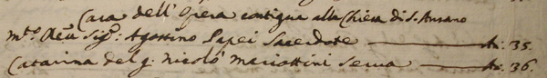
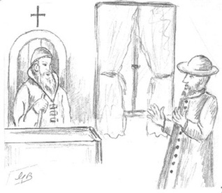
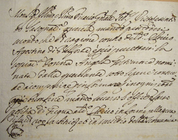

LA CAUSA CONTRO AGOSTINO
La prima persona dei Papei che si conosca, nata a
Belforte fu, come abbiamo visto, Maria nel 1649, ma il
personaggio più interessante di questo ramo, fu senz'altro
Agostino, sia per essere giunto a Siena già nel 1674, sia
per la denuncia mossagli da Maddalena Butini a causa delle
percosse subite. Questo Agostino, da non confondere con
l'omonimo vissuto un secolo più tardi a S.Rocco a Pilli, era
figliastro del padre di Giovan Battista Goretti e fu clerico
al S.Maria della Scala.
|
CONTRO IL CLERICO SERVENTE NELLO SPEDALE AGOSTINO PAPEI
Anno Domini 1674 Indizione XII, die vero 2 februarij coram vobis
Compare Magdalena di Matteo Butini, habitante alle Due Porte
sotto la cura di S.Quirico.
Si dolse e querelò contro Agostino di N. da Belforte, clerico
servente nello Spedale di S.Maria
della Scala di questa città perchè hiersera nella hora prima di
notte accompagnato con Giovanni
Battista Goretti aperse con violenza l'uscio di casa sua, salì
con detto Goretti, e arrivato
in camara e trovatala al letto e doppo haver detto alla detta
querelante:- che cosa fate? - et essa
rispostogli: - non vedete sto a letto - detto
Agostino clerico gli messe la mano alla bocca,
e disse al Goretti che gli ammenasse sotto e che
però la scoprisse sì come fece e diede detto
Goretti molte percosse a detta Maddalena con
pugni nelle parti di sotto, e per il corpo; come
anco fece detto clerico, mentre che le aveva
chiusa la bocca e che persuadeva il Goretti a
percuoterla e doppo haverli dato più percosse la
lasciorno con dirgli:- se questa volta t'abbiamo
dato, quest'altra volta ti sfregiaremo - e se
n'andorno, con havergli anco detto parole in
quel mentre che la percotevano dishoneste, et
ingiuriose onde domandò procedersi contro detto
Agostino clerico alle pene che si prescrivano
da Sacri Canoni Ecclesiastici.
Allora sentita la medesima gli fu dato il
giuramento quale essa giurò:
D. (domandatogli) - Che causa habbia hauto il detto Agostino di
fargli simil'affronto.
R. (rispostogli) - Forse perchè tra me e la padrona con la quale
sta il detto Goretti vi erano corse
alcune parole di poco momento piccanti e per questo credo che
il detto Agostino per far cosa grata a
detto Goretti e per sua accompagnatura m'habbi fatto
tal'affronto come ho deposto.
D. - Se la porta era facile ad aprirsi oppur se scassassero la
medesima.
R. - La scassorno con calci facendo sconficcare la toppa.
D. - Se vi fosse o sentisse alcuno da parte.
R. - Credo che ciò sentisse Angela che sta vicino a me in casa
delle Monache Derelitte (ricovero di
fanciulle orfane, non più esistente, situato all'attuale n°28
di Pian dei Mantellini e riconoscibile
per l'architrave del portone che reca la seguente frase: "Virg
Mar Societas Erexit" - la
confraternita della Vergine Maria Eresse) altri non posso
credere che potessero sentire.
|
Dopo gli interrogatori della querelante Maddalena
Butini, dei testimoni e dei due presunti colpevoli: Giovan
Battista Goretti e Agostino Papei (che nel frattempo erano
agli arresti), la Corte condannò il detto Agostino al
pagamento di un'ammenda di 200 scudi. Tale somma, garantita
dal nobile Orazio Vieri, gli avrebbe evitato la scomunica,
infatti un manoscritto conservato a Volterra, recita che il
clerico riuscì a prendere i voti il 21 settembre 1675.
Chi fosse interessato a leggere integralmente il dibattimento ritrascritto, lo potrà trovare, insieme
al testo originale, all'Archivio della Curia Arcivescovile di Siena, sotto la voce "Cause
Criminali", libro n° 5562.
Altre notizie su Agostino non ne abbiamo fino al 1687
dove egli appare in un elenco di chierici. Accanto al suo nome viene indicata la sua funzione: confessore alla Madonna di
Provenzano. In un periodo successivo, il suo nome verrà cancellato senza indicarne il motivo.
Dopo due anni, il 7 agosto 1689 lo troviamo fra gli ammessi alla Congregazione del Suffragio (Archivio di Stato di Siena - Patrimonio Resti 2411 - pag.59r) e sempre nello stesso anno, il 27 ottobre, è citato in qualità di "sacerdote prete" per essere stato "testimone alla sepoltura della Marchesa Margarita Laura figlia di Giovanni Marsilij e Consorte del Marchese Domenico Antonio Cennini habitante nel Palazzo Marsilij".
Dallo Stato delle Anime di S.Quirico del 1691, si nota che conviveva insieme a una sua serva, nei pressi della chiesa di S.Ansano.

Quindi, il 23 aprile 1691 e il 14 luglio 1692, lo troviamo citato
come testimone di nozze celebrate nella Parrocchia di S.Pietro Ovile, tanto da indurci a supporre che egli abitasse in quel territorio.
Ma Agostino lo ricordiamo soprattutto perchè clerico
nello Spedale, quello stesso ospedale che 280 anni dopo
avrebbe avuto tra i suoi dirigenti un altro Papei: Bruno,
morto in un incidente automobilistico a Torrita di Siena, la
vigilia di Natale del 1960.
  |